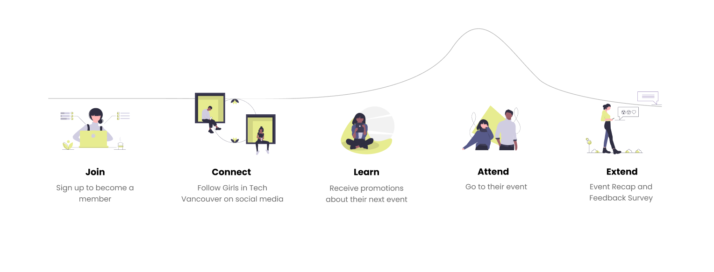
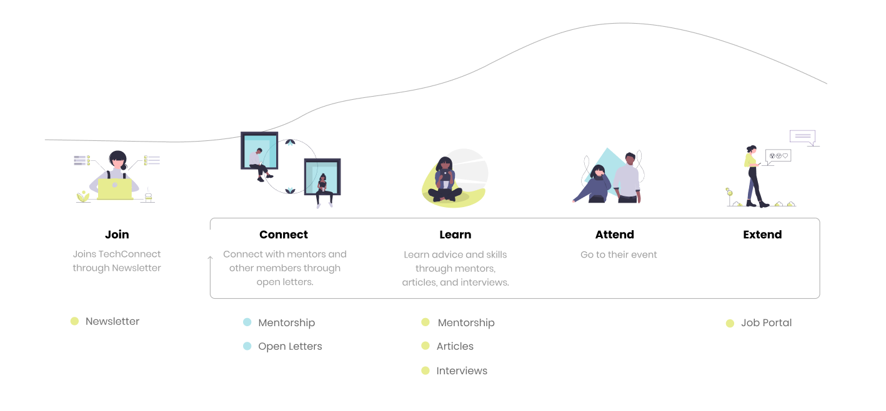
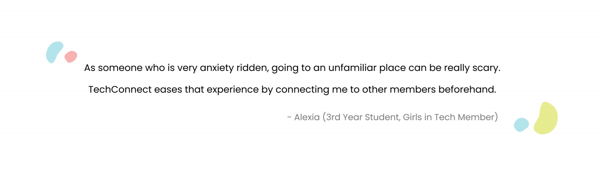
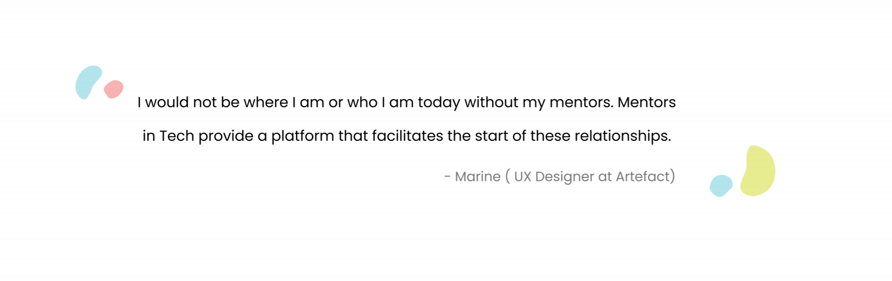
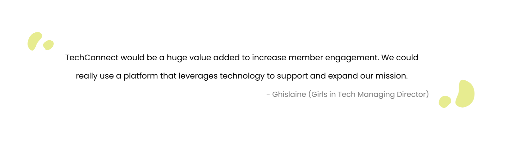

TechConnect
333 - TechConnect from arella on Vimeo.
Context
IAT 333: Interaction Design Methods is a third-year program that introduces design methods for interaction design. Through 14 weeks of design ethnography and user journey research, personas, participatory workshops and prototyping my team and I created TechConnect for Girls in Tech Vancouver. View the website prototype and deck slides.
Girls in Tech Vancouver and their Mission
Girls in Tech Vancouver is a chapter of the global non-profit Girls in Tech. Their mission is to support women by providing them with the education and community necessary to succeed.
The Vancouver chapter is interested in the retention of females in technical roles. Currently, they aim to host events quarterly to carry out their mission in the local tech community. They do this by hosting events such as hackathons, panels, and workshops every quarter.
TechConnect Proposal
TechConnect is a redesign of the current Girls in Tech Vancouver’s blog with added features to improve the current member’s experience and in the end retention within women in technical roles.

Figure 1:Landing page of TechConnect's Prototype
Initial Area of Focus
Aligning with Girls in Tech’s mission of improving the retention of female workers in the tech industry through events, our team was focused on strengthening interactions between industry professionals and participants during events.
Research and Insights
Ethnography Research Methods
Observation: Attended a weekly meeting and was introduced to the Member signup process.
Interviews: Interviewed members of the managing team and event participants.
Current Digital Presence: Observed Girls in Tech’s digital presence on Facebook, Instagram, Website, Blog, and Newsletters.
Past Data Analysis: Viewed past event debriefs and participant feedback survey results
Insight 1: Lack of Interaction Between Events
Girls in Tech Vancouver’s Event Coordinator our attention to that there is a lack of interaction both before and after the events. By not interacting with members outside of events, it can lead to low engagement, member confusion, and not getting value.
Insight 2: In-Person Connections are Limited
Facilitating in-person connections between people during events was both limiting and not feasible due to the lack of control. Pursuing this insight would to a surface level solution that would not address core concerns found during our research in an impactful way.
Insight 3: Retention Begins with Early Intervention
Member data shows that students from UBC, SFU, and BCIT make up the majority of Girls in Tech Vancouver’s membership base. From this data, we concluded that our target audience would be senior Vancouver University students in computer science, data science, or design who are looking to bridge the gap between their education and the practices of the local tech industry.


Figure 2: Two personas my team and I created after doing user research.
Revised Area of Focus
Improve the member experience, specifically during the period between events, by giving inexperienced members a network to connect and interact with each other and local industry professionals.
Design Opportunity
Old Member Journey
Figure 3: Old Member Journey.
New Member Journey
Figure 4: New Member Journey.
Features Breakdown
Newsletters
Mentorship
Learn: Mentors in Tech provides members with various learning opportunities. Mentors can choose to hold their own projects where they guide their mentees. Having a mentor can help members more easily understand and practice their skills. Along with skills, members can ask for advice regarding
Open Letters
Interviews
Articles
Job Portal
Concept Validation
  Reflection
This project was my first experience with User Research and UX Design. After many hours in the studio with my team, we were able to create and design a product that we all believed in. Personally, this project is extremely special to me as it helped me find an area in design that I am truly passionate about. Reflecting back on our professor's feedback, we could have improved our video by making it more realistic.